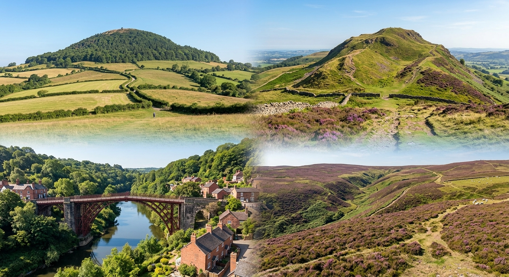

Walking & Trail Logs 🥾
Welcome to my walking page! Here I record route notes, hill climbs, and trail highlights across the local landscape.

The Marches Group (LDWA)
The Welsh Marches and Shropshire Hills offer some of the finest walking country in the UK, from the steep ridges of Caer Caradoc and Long Mynd to historic border paths. Joining organized social walks and challenge events is a great way to explore the region with fellow long-distance walkers.
To view upcoming group walks, challenge events, and local route itineraries, check out the Marches Group - Long Distance Walkers Association.